Luis Arturo González Salas
M.Sc. in Robotics Engineering
I design, build, and program physical systems. I recently completed a double degree Master in Advanced Robotics in Japan and France. I have experience combining hardware, sensors, and control algorithms to solve real problems.
Education
Double degree master and bachelor studies across Japan, France, and Mexico.
Academic Projects
Robotic manipulation, automation lines, and computer vision systems.
My Code
Personal repositories with clean and structured algorithms.
Education and Main Achievements
Academic Background
M.Sc. in Science & Engineering
Keio University (Tokyo, Japan) | 2024 - 2025
Part of the JEMARO Double Degree program. Focused on micro-robotics and control systems.
M.Sc. in Advanced Robotics
Ecole Centrale de Nantes (France) | 2023 - 2024
First year of the JEMARO Double Degree. Focused on kinematics, dynamics, and medical robotics.
B.Sc. in Mechatronics Engineering
Tecnológico de Monterrey (Mexico) | 2019 - 2023
Minor in Cyber-physical Systems.
Honors and Awards
Erasmus Mundus Scholarship
Awarded for master studies in the JEMARO program (2023).
Full Coverage Scholarship
Awarded full tuition for bachelor studies (2019).
Olympiad of Informatics Medals
Silver medal at the National Mexican Olympiad (2018) and Gold medal at the State level (2016 to 2018).
CSWA SolidWorks Certification
Certified associate in mechanical design (2021).
COVID-19 Public Hospital Donation
Designed and produced 1800 mask protectors for medical staff (2020).
Diplomas and Certifications
Ingeniero en Mecatrónica
Tecnológico de Monterrey
Master Sciences, Technologies
Ecole Centrale de Nantes
Master of Science in Engineering
Keio University
JEMARO Diploma Supplement
Erasmus Mundus Joint Master
Basic Training e-Series
Universal Robots Academy
Academic Projects
This section highlights the physical systems I built during my master and bachelor degrees. They involve mechanical design, electronics integration, and control software. Click on any project to see the details and media.
Master Degree Projects

Micro-scale Particle Teleoperation
I designed a two axis haptic teleoperation system. This system allows a user to physically feel and control microparticles trapped by a laser. I integrated trap stiffness calibration with admittance control and reaction force observers.
View Details
Medical Cobotic Assistant
I developed a simulation for the hand guidance of a macro micro redundant robot. The system was designed for medical applications to assist in percutaneous interventions using advanced torque and impedance control laws.
View Details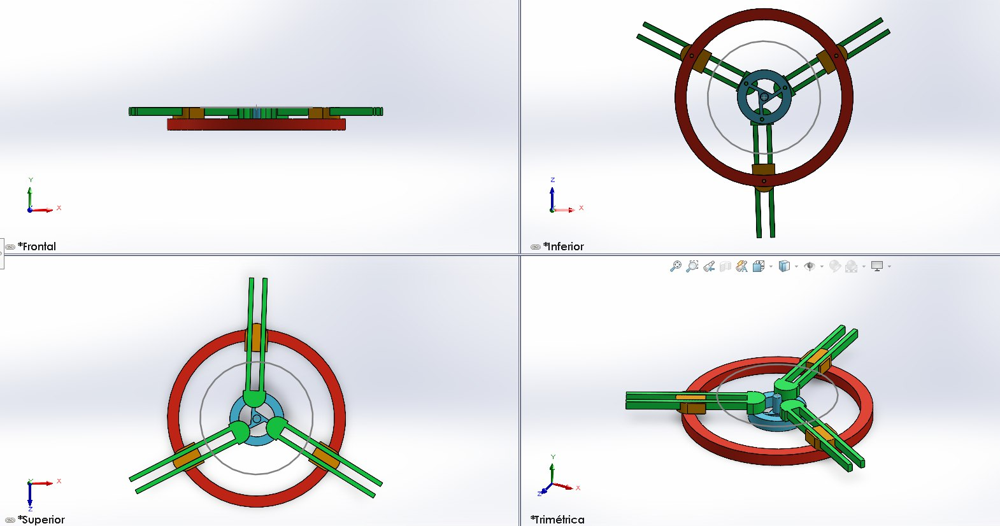
3-RPR Parallel Robot Optimization
Designed and mathematically optimized a 3-RPR planar parallel robot to minimize its physical footprint while maintaining strict operational reach and singularity-free configurations.
View Details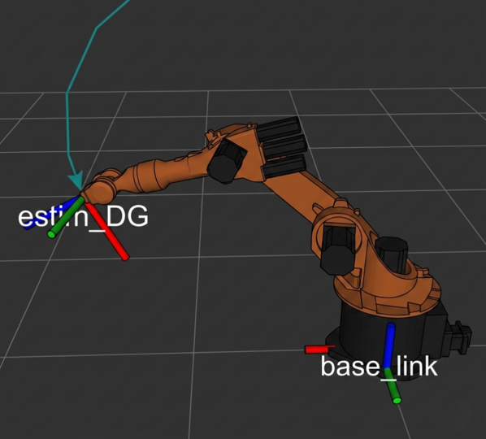
Manipulator Modeling & Control - Robotic Arms
Developed foundational control algorithms in C++ for robotic manipulators. Handled direct and inverse kinematics, Jacobian modeling, and Cartesian trajectory generation across multiple simulated robots.
View DetailsBachelor Degree Projects

Automated Keychain Production Line
Automated a manufacturing plant using mobile robots, collaborative arms, and digital twin technology to create a self-regulating Industry 4.0 system for keychain production.
View Details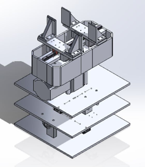
2-DoF Automated Gripper for Construction
Development of a 2 Degrees of Freedom linear gripper and rotational system for automated brick laying. Integrates precise motor control, structural CAD design, and real-time sensor feedback.
View Details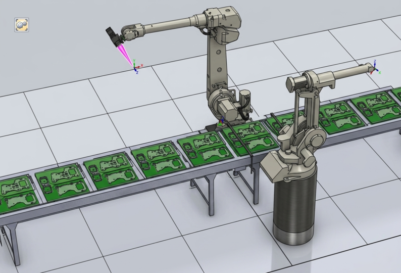
Automated Robotic Welding Cell
Designed and simulated an automated robotic work cell for a laser welding production line. Integrated ABB industrial robots, custom pneumatic fixtures, and safety systems using RobotStudio and SolidWorks.
View DetailsPersonal Code Repositories
These are software projects I write to practice algorithms and learn new frameworks. Click on any repository to view the code structure, interface media, and technical details.
Collaborative Arm: Fruit Sorting Simulation
A complete ROS 2 and Gazebo simulation of a robotic arm. It uses stereo vision to detect red and green apples, and an inverse kinematics solver to pick and sort them. Includes a custom Tkinter GUI for manual and automated control.
Micro-scale Particle Manipulation Using Bilateral Control
Technical Overview
Software
MATLAB, C++, OpenCV
Hardware
Motorized stage, Laser controller, High speed Camera, Linear Motor
Project Context
Optical tweezers use a highly focused laser beam to hold and move microscopic objects. For my thesis, I wanted to allow a human operator to physically feel the microscopic forces while manipulating these particles. I built a system that acts as a bridge between the macroscopic human world and the microscopic cellular world.
Development Process
First, I set up the hardware to read image data from the microscope camera. I used this visual information to track the position of the microparticles in real time.
Next, I calibrated the system using an experimental cross validation technique to measure the trap stiffness. This step was necessary to accurately calculate the invisible forces acting on the particle.
Finally, I implemented an admittance based bilateral control law. I used a reaction force observer to send tactile feedback to a linear motor. This allowed the user to move the linear motor by hand and feel physical resistance whenever the microscopic particle encountered an obstacle in the fluid.
Medical Cobotic Assistant
Technical Overview
Key Concepts
Impedance Control, Kinematics, Jacobian, Task Distribution, Manipulability Index
Software Tools
MATLAB, Simulink
Simulated Hardware
KUKA iiwa 7 R800 (7 DoF), RRR Serial Robot (3 DoF)
Project Context
I developed a simulation for the hand guidance of a macro micro redundant robot. The goal of this project was to assist in percutaneous medical interventions. Improving medical gestures leads to better patient care, reduces intervention costs, and improves the overall working conditions for surgeons.
The entire system was built as a simulation using MATLAB and Simulink. The setup consisted of a large 7 DoF KUKA robot acting as the macro system and a small 3 DoF robot acting as the micro system.
Robotics Fundamentals and Control
First, I defined the configuration of both robots using Denavit Hartenberg parameters to calculate their forward kinematics and Jacobian matrices. The Jacobian is essentially the mathematical bridge between the joint velocities and the tool's velocity. From this Jacobian, I calculated the manipulability index. This index is a critical safety and performance metric because it tells the system how close the robot is to a singularity, a dangerous position where the arm gets mathematically stuck.
A core requirement was that the main KUKA arm had to be controlled by position while maintaining a fixed orientation, whereas the smaller micro robot was controlled purely by torque. I designed a computed torque controller with an impedance control law. This is extremely important for medical applications. Instead of forcing the robot to move rigidly to a point, the impedance control makes the tool act like a virtual spring and damper. This allows the system to yield softly when the surgeon applies physical force, making the heavy robot feel weightless and safe to guide by hand.
To make both robots work as a single unified system, I developed a task distribution algorithm. This logic continuously monitors the distance between the micro robot's base and its tip, known as length AB, along with the manipulability index. Based on these values, the algorithm dynamically adjusts the adaptive gain, deciding in real time whether the large KUKA arm needs to move to assist the small tool or if the small tool has enough workspace to move alone.
Simulation Architecture and Results
Macro Micro Robot Configuration
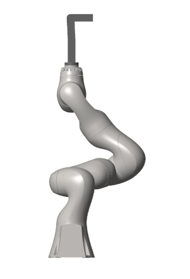
General Control Diagram
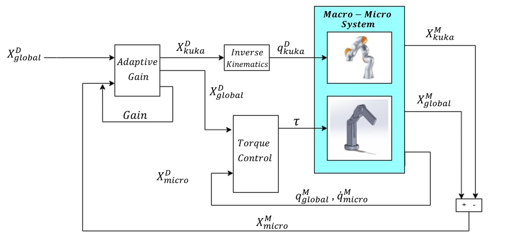
Torque Control Diagram
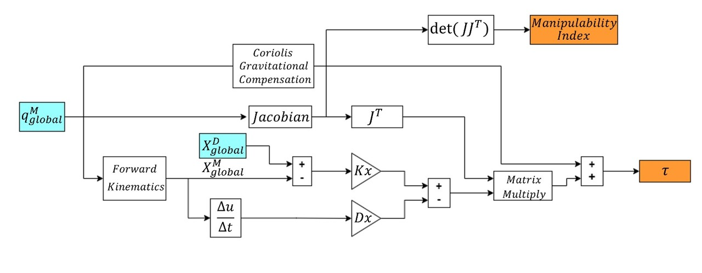
Micro Robot Kinematic Points (Length AB)
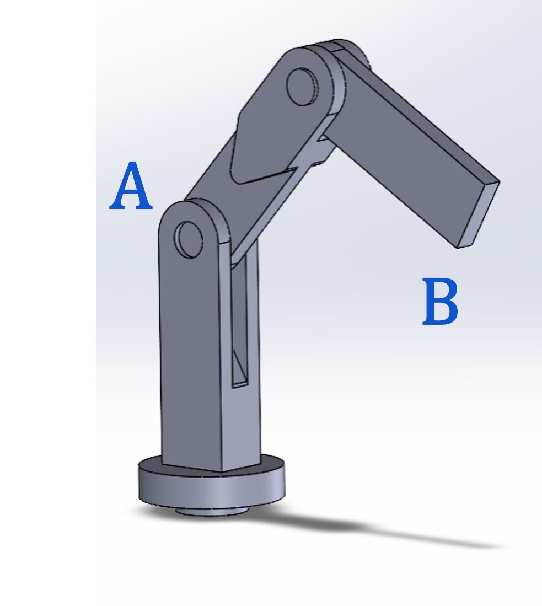
The distance between point A and point B dictates the task distribution gain.
Adaptive Gain and Manipulability Index
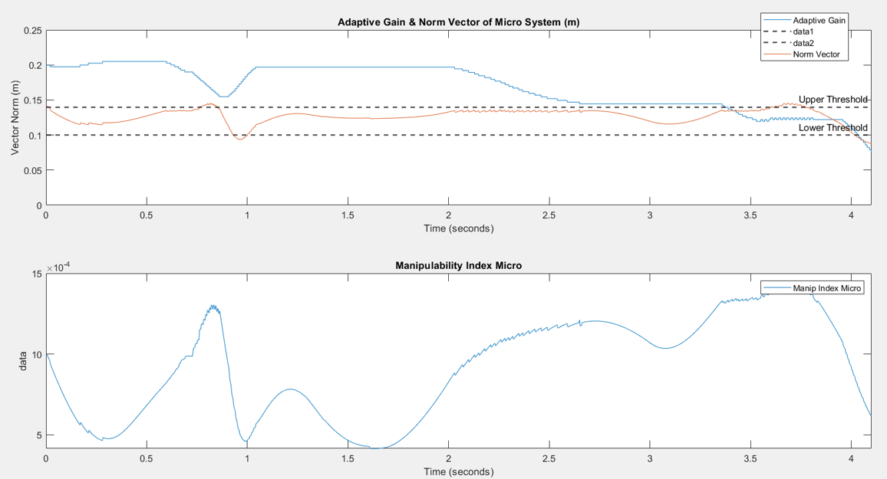
Desired Cartesian Displacement
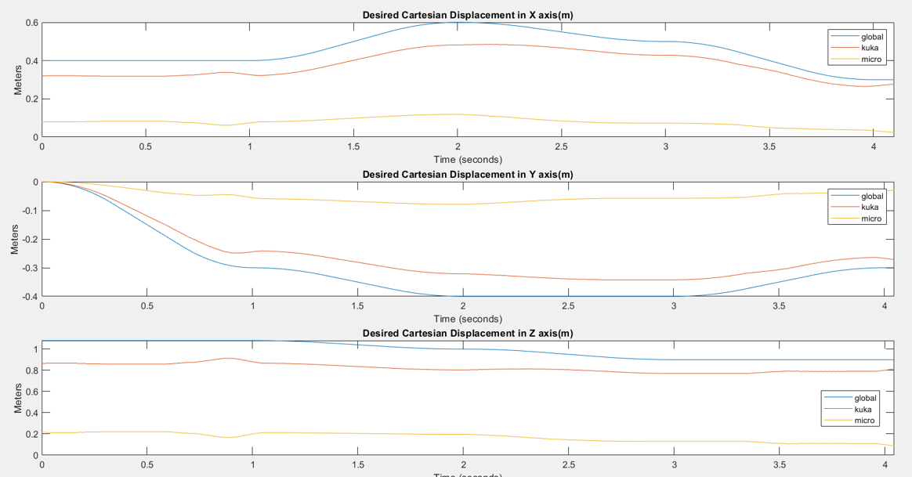
Measured vs Desired Global Trajectory
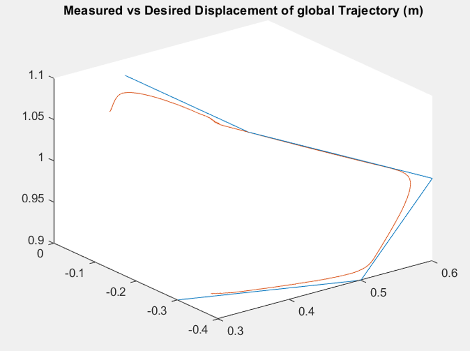
Simulink Models (Annexes)
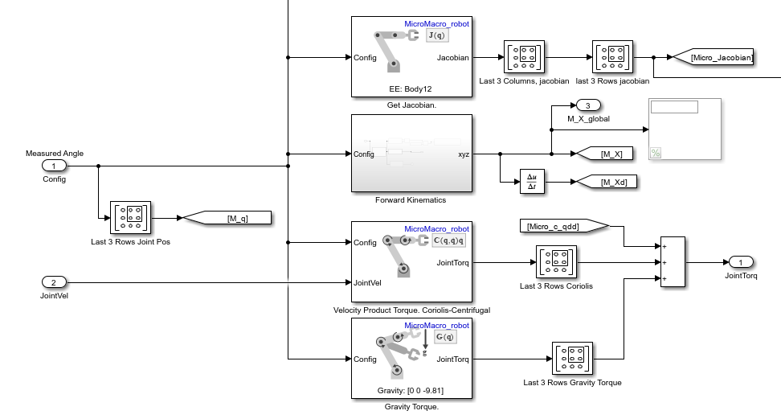
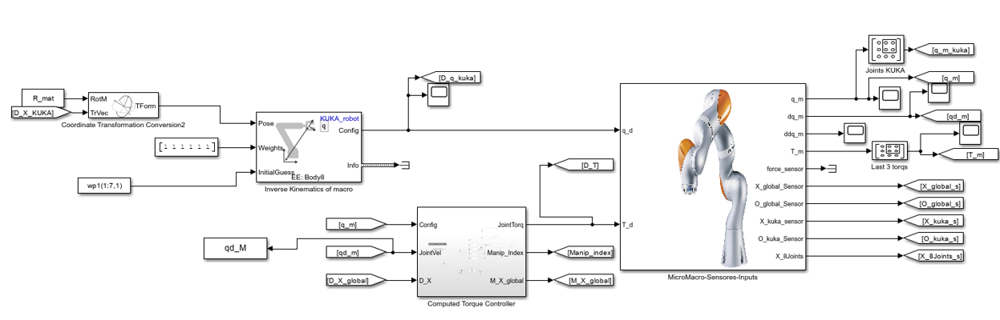
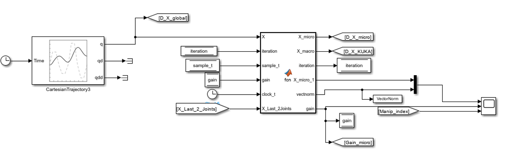
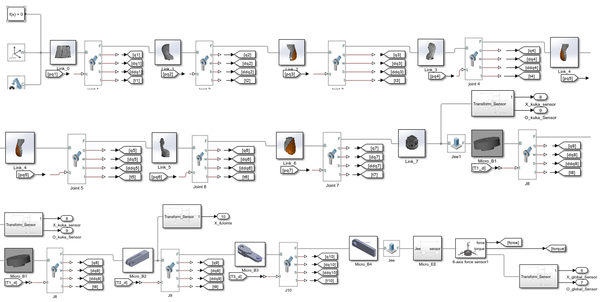
Automated Keychain Production Line
Project Highlights
Core Skills
System Integration, Autonomous Navigation, Computer Vision, PLC Communication, Custom Hardware, Factory Simulation
Software Tools
ROS, Python, OpenCV, Modbus, RobotStudio, Tecnomatix, TIA Portal
Hardware
Mobile Manipulator (xArm on mobile base), ABB YuMi, UR5, Modula storage, Siemens PLCs, Jetson Nano, ZED 2 Stereo Camera, Lidar
Project Context
I developed this project during the Cyberphysical Systems class of my Mechatronics Engineering bachelor degree. Building this complete production cell awarded me my minor specialty in Cyberphysical Systems. The goal was to build a fully automated production line to assemble custom keychains. We collaborated with industry partners like Siemens.
System Integration and Architecture
The physical setup connected multiple industrial machines into a unified ecosystem. The core of the operation was the mobile manipulator (MoMa), consisting of an xArm collaborative robot mounted on an autonomous mobile base. I integrated this with conveyor belts, a Modula vertical automated storage unit, an ABB dual arm YuMi robot, and a stationary UR5 robotic arm to handle assembly and material handling tasks.
To ensure precise manipulation, I designed custom hardware and vision systems. I modeled custom camera mounts and fixtures in CAD to hold the keychains securely on the conveyor belts. The vision system used OpenCV to detect the exact position and orientation of parts, sending this data to the robotic grippers for a perfect pick.
Communication was handled via Modbus TCP/IP with Siemens PLCs. By reading specific holding registers and coils, my Python scripts synchronized the hardware across the entire cell. I used ROS and the actionlib library to send navigation goals to the mobile bases, while visualizing sensor data like laser scans and occupancy maps in RViz. To validate the entire factory flow, I used Tecnomatix Plant Simulation to optimize material handling and RobotStudio to program safe, collision free paths for the stationary robots.
I designed a central user interface using Python and Tkinter, backed by a robust state machine logic, to monitor and control the entire operation. This interface allowed operators to launch pick and place routines and monitor battery levels. Throughout the process, I applied ANSI and RIA safety standards to ensure the physical cell was safe for human operators, successfully overcoming hardware challenges such as controller failures and mechanical stresses on custom grippers.
Hardware, Software, and Tools
| Category | Components Used |
|---|---|
| Robots | ABB YuMi (Collaborative), UR5 (Collaborative), 2 Smart Mobile Robots with xArm v5 arms. |
| Hardware | Jetson Nano, ZED 2 Stereo Camera, Lidar |
| PLC Systems | Siemens S7-1500 (Master/Client), S7-1200 (YuMi control), S7-300 (Conveyor/UR control). |
| Software | ROS (Robot Operating System), ABB RobotStudio, Process Simulate (Tecnomatix), SOLIDWORKS. |
| Vision/AI | OpenCV (Python), HSV Filters for circle detection, Regression models for predictive maintenance. |
| IoT/Data | PI Vision, PI System Explorer, Modbus TCP/IP protocols. |
| Machinery | Modula Warehouse, Laser Cutter, CNC EMCO Machine. |
Project Media Gallery
Custom Camera Mount Design

CAD of the custom mount for the ZED camera on the xArm gripper.
Computer Vision

Visual representation of the HSV filters and circle detection algorithm.
Custom Fixture CAD

CAD models of the modular fixture used to hold the hexagonal acrylic pieces.
Fixture on Conveyor

CAD models of the modular fixture interacting with the conveyor.
Robotic Gripper Pick

A real-world photo of the collaborative arm picking up the fixture handle.
Interface State Machine

The Control Interface used to monitor the status of the mobile robots, stations and batteries.
Final Product Output

The final manufactured acrylic product with laser-cut edges and CNC-engraved crown emblem.
Mobile Robots Fleet
Photo of the two autonomous mobile robots used for logistics.
Automated Vertical Storage

The mobile robot aligned with the Modula warehouse tray.
RobotStudio Digital Twin

Screenshot of the ABB vision panel used to train patterns for the YuMi robot.
RViz Navigation

The ROS visualization tool showing the lab map and obstacles in real-time.
Tecnomatix Layout Simulation

Screenshot of the Digital Twin simulation used to test the plant layout.
UR5 at Conveyor

The UR robot interacting with materials at the conveyor station.
UR5 at Press Station

The UR robot pressing the acrylic components into the fixture.
2-DoF Automated Gripper for Construction Blocks
Project Highlights
Core Skills
Mechanical Design, Motor Control, Sensor Integration, State Machine Logic, Automated Construction
Software Tools
SolidWorks (3D CAD), Arduino IDE
Hardware
PowerFlex 4 Drive, 3-Phase AC Motor, Arduino, Gyroscope, Accelerometer, Ultrasonic & Piezoelectric Sensors, Geckodrive G202, Nema 34 Stepper Motors
Project Overview
This project focuses on the engineering and development of a linear gripper equipped with an AC motor and a rotational system, specifically designed to lift and position bricks for automated wall construction. The primary objective is to accelerate the building process while significantly mitigating the physical strain experienced by construction personnel during heavy material handling tasks.
System Integration and Architecture
The mechanical architecture features a custom-designed gripper geometry optimized for secure brick retention, integrated with a precision rail system to guide linear movement. To ensure accurate placement, an automated leveling mechanism was engineered utilizing ball screws and bearings, enabling dynamic adjustment of the brick's positioning angle.
On the control and power side, a PowerFlex 4 driver was configured to manage a three-phase AC motor capable of sustaining the heavy loads required during brick transportation.
Furthermore, precise sensor integration and motor coordination were achieved through custom state machine logic deployed on an Arduino microcontroller. This control unit processes real-time data from an array of instruments—including gyroscopes, accelerometers, ultrasonic sensors, and piezoelectric sensors—to execute precise adjustments and maintain overall system stability.
CAD Designs and Technical Renderings
Full System - Lateral View
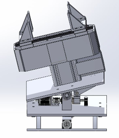
A side profile detailing the linear guide rails and mechanical structure.
Full System - Alternate Isometric
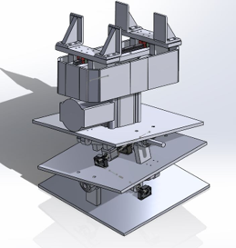
Secondary isometric view showcasing the integration of the leveling mechanism.
Gripper Module - Isometric
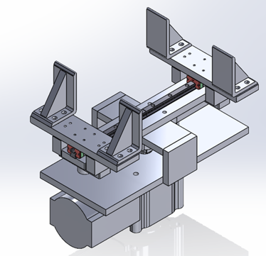
Detailed view of the specific gripping geometry used to secure the construction blocks.
Gripper Module - Front & Lateral
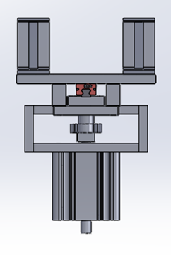
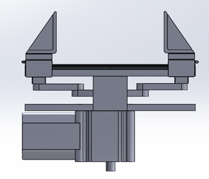
Orthogonal views for manufacturing dimensions of the gripper module.
Rotational Base - Front View
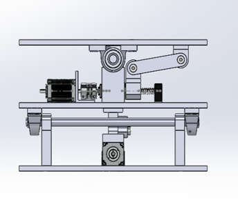
Front layout of the rotation mechanism driven by the AC motor.
Rotational Base - Lateral & Isometric
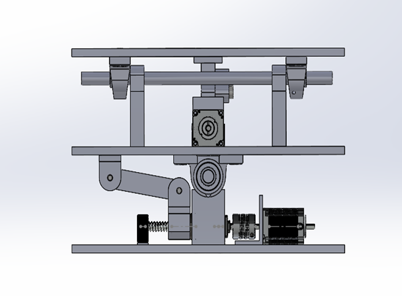
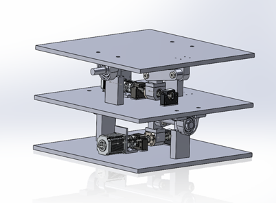
Views demonstrating the bearing placements and gear ratios.
Design and Optimization of a 3-RPR Planar Parallel Robot
Technical Overview
Core Skills
Mechanical Design, Mathematical Optimization, Kinematics, Singularity Analysis
Software Tools
SolidWorks (3D CAD)
Project Overview
Developed during an academic year at École Centrale de Nantes, this project focused on the design and size optimization of a 3-RPR (Revolute-Prismatic-Revolute) planar parallel robot. The main objective was to engineer an efficient robotic system by minimizing its overall physical footprint and material usage while preserving strict performance capabilities.
Size Optimization and Workspace Constraints
To achieve a minimalist and efficient design, a mathematical optimization process was applied to reduce the size of both the robot's outer base and its central moving platform. The challenge was to make the robot as compact as possible without compromising its operational reach.
The system was successfully optimized to guarantee full functionality within a target 100 × 100 unit square workspace. Inside this required area, the central platform maintained the ability to accurately reach all coordinates and rotate up to ±30 degrees.
Singularity Avoidance
A critical requirement when designing parallel robots is avoiding singular configurations—specific positions where the mechanism loses stiffness or becomes completely uncontrollable. To ensure reliability, the optimization algorithm included strict singularity avoidance constraints.
The robot's stability was evaluated across 15 extreme poses within the workspace to guarantee it would remain stable, highly controllable, and far from any mechanical lock-ups at all times.
Validation and CAD Simulation
Once the theoretical dimensions were calculated, the design was validated by translating the data into a fully realized 3D mechanical assembly using SolidWorks. By simulating the robot's movements, the CAD model successfully proved the mathematical concepts, demonstrating smooth, singularity-free operation across its entire required workspace.
Manipulator Modeling & Control - Robotic Arms
Technical Overview
Core Skills
Kinematics, Jacobian Computation, Trajectory Generation, Mathematical Modeling, Joint & Cartesian Interpolation
Software Tools
C++, ROS, ViSP (Visual Servoing Platform)
Simulated Hardware
RRP Turret Robot, KUKA KR16 (Spherical wrist), Universal Robot UR10 (Non-spherical wrist)
Project Overview
Developed during the Master's program at École Centrale de Nantes, this comprehensive lab work focused on the fundamental mathematical modeling, simulation, and control of robotic manipulators. The project required programming in C++ to develop the core algorithms that govern robotic movement, specifically calculating the Direct Geometric Model, Inverse Geometric Model, and Jacobian Kinematics.
Kinematic Modeling
The foundation of the project involved establishing the Modified Denavit-Hartenberg (MDH) parameters for each robot. These parameters were used to computationally derive the kinematics. Direct Geometric Model algorithms were written to calculate the exact pose of the end-effector in Cartesian space based on the given joint configurations. The Jacobian matrix was computed to relate the joint velocities to the operational velocity of the end-effector. Additionally, complex trigonometric solvers were implemented as Inverse Kinematics to calculate the required joint angles needed to position the robot's end-effector at a desired target pose.
Trajectory Generation and Control
With the mathematical models established, various point-to-point control strategies were implemented to guide the robots. Joint Space Interpolation calculated trajectories to move the robot smoothly between initial and final joint configurations. Cartesian Space Interpolation utilized the Inverse Geometric Model to force the end-effector to follow a straight 3D line in operational space by sequentially reaching closely calculated intermediary poses. Furthermore, Jacobian-Based Control sent continuous joint velocity commands, calculated via the Jacobian pseudo-inverse, to drive the end-effector toward the desired pose in a straight line while minimizing pose error.
Design and Simulation of an Automated Robotic Welding Cell
Technical Overview
Core Skills
Robotic Simulation, Mechanical Design, System Integration, Industrial Safety
Software Tools
ABB RobotStudio, SolidWorks
Hardware
ABB IRB 4600, ABB IRB 1410, Pneumatic Actuators, Cognex Camera System
Project Overview
This project focuses on the comprehensive design, simulation, and integration of an automated robotic work cell tailored for a laser welding production line. The primary objective was to engineer a robust, efficient solution to replace manual welding operations, optimizing production time while adhering to strict industrial safety and quality standards.
Robotic Hardware and Coordination
The manufacturing cell centers around the synchronized operation of two distinct industrial robotic arms. An ABB IRB 4600 serves as the primary welding unit, selected for its specific reach and payload capabilities to maneuver the laser welding tool along precise trajectories across the workpieces. Additionally, an ABB IRB 1410 operates as an auxiliary handling unit, responsible for picking up and holding the secondary component precisely in place on top of the base plate during the welding process.
Workholding and Actuation
To ensure absolute stability during high-precision laser welding, the base plates are secured using a custom-designed fixture. This fixture integrates two pneumatic clamp actuators that automatically lock the base plates onto the conveyor before the auxiliary robot positions the top piece and the welding sequence begins.
Software Architecture and Simulation
The entire work cell was developed and validated virtually prior to physical implementation. ABB RobotStudio served as the core platform for 3D layout planning, virtual commissioning, and offline programming of both robotic arms. It was also utilized to parameterize and configure the integrated Cognex camera system, establishing the communication and logic for the machine vision quality control inspections. SolidWorks was employed for the precise mechanical design of all custom components within the cell, including the design of the pneumatic work-holding fixtures, safety fencing, and the specific connection flanges required to mount the welding tool to the robot's Tool Center Point.
Safety and Industrial Standards
The robotic station was engineered with strict adherence to industrial safety regulations. The cell incorporates a mechanized conveyor system for part transit, physical perimeter fencing, laser safety sensors, and emergency stop mechanisms, ensuring a secure operational environment compliant with ISO safety standards.
Collaborative Arm: Fruit Sorting
Technologies Used
Core Framework
ROS 2, ament_cmake
Languages
C++, Python 3
Simulation
Gazebo 11, RobotStatePublisher
Libraries
OpenCV, Orocos KDL, Tkinter
Project Overview
I built a complete ROS 2 and Gazebo simulation of a robotic arm to detect and sort red and green apples. The system is built on a modern robotics stack combining C++ for math and Python for high level logic. I used ROS 2 as the middleware to allow different nodes to communicate, and Gazebo for the physics simulation where the robot interacts with objects.

The custom control panel working together with the Gazebo environment and stereo vision cameras.
Robotics Fundamentals and Architecture
The vision detector script uses OpenCV to process the stereo camera feed. By comparing the pixel shift between the left and right lenses, the system calculates the depth distance to the apples. It uses a specific formula multiplying the focal length by the baseline and dividing by the pixel shift. Then, it uses the TF2 library to translate these camera coordinates into world coordinates so the robot base knows exactly where to reach.
For the arm movement, I wrote a C++ node that handles the kinematics. It uses the Orocos Kinematics and Dynamics Library to solve the inverse kinematics problem. If I want the robotic hand at a specific coordinate, the Levenberg Marquardt Algorithm calculates the exact angles for all six motors.
The entire process starts with a launch file that loads the robot into the Gazebo world. The vision node finds the apples and publishes their location. A custom Tkinter interface allows the user to select an apple. The target coordinates are sent to the inverse kinematics solver, which converts the 3D point into joint angles and sends them to the controller manager to execute the movement.
File Architecture
my_arm.urdf.xacro
Defines the physical structure, joints, and sensors of the robot. It acts as the skeleton.
fruit_sorting.world
Defines the environment, including the table and the apples. It acts as the simulation stage.
ik_solver_node.cpp
Solves the math for moving the arm to 3D points. It acts as the brain calculating the movements.
vision_detector.py
Detects red and green apples using color masks and calculates stereo depth. It acts as the eyes.
cartesian_jogger.py
Provides a graphical interface to manually move the robot and capture positions. It acts as the remote control.
spawn_arm.launch.py
The master script that starts the simulation and coordinates all the nodes.